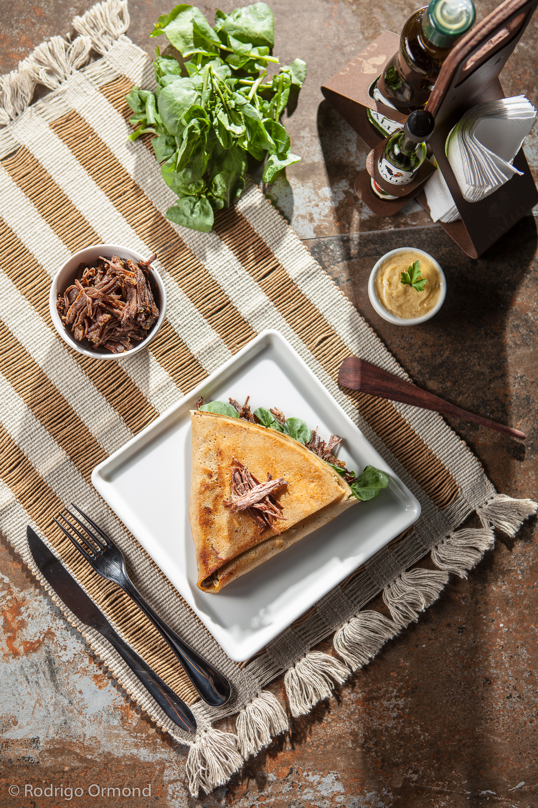
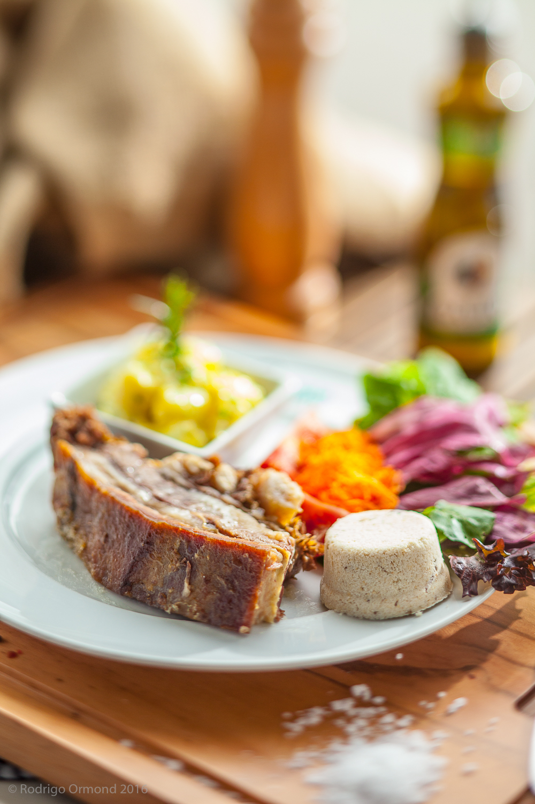

Food photography é uma das especialidades que mais evoluiu nos últimos anos. Com redes sociais visuais como Instagram e Pinterest ditando comportamentos de consumo, a qualidade das imagens de alimentos se tornou um fator decisivo na escolha de restaurantes, na compra de produtos e na percepção de marcas gastronômicas.
Mais do que Fotografar — Produzir
Uma boa foto de alimento começa muito antes do clique. O food styling — a arte de preparar e apresentar o alimento para a câmera — é tão importante quanto a iluminação e o enquadramento. Trabalhamos com food stylists experientes que conhecem as técnicas para manter a aparência fresca dos alimentos, criar texturas apetitosas e construir composições que guiam o olhar.


Iluminação: A Chave do Apetite
A luz em fotografia de alimentos deve realçar texturas, criar profundidade e transmitir temperatura. Luz lateral revela a textura de um pão rústico; luz difusa de cima valoriza caldos e sobremesas; backlight cria aquela brilho irresistível em líquidos e frutas. Cada prato tem uma iluminação ideal — e encontrá-la é parte fundamental do nosso processo.
Trabalhamos tanto com luz natural em estúdio quanto com iluminação artificial controlada, dependendo do conceito visual da marca e do tipo de produto fotografado.
Para Quem é a Food Photography
Nossos clientes nessa área incluem restaurantes, redes de alimentação, marcas de produtos alimentícios, plataformas de delivery, revistas gastronômicas e qualquer empresa que precise comunicar qualidade e sabor através de imagens. Do cardápio impresso ao anúncio digital, as imagens de alimentos bem produzidas têm retorno mensurável em conversões e vendas.
"Você come com os olhos primeiro. Uma boa foto de alimento já desperta o apetite antes mesmo do primeiro garfo."